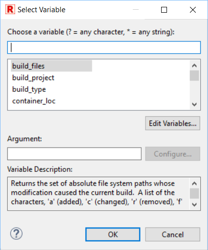

Eclipse string substitution feature allows using built-in or custom variables in different places - for example in launch configurations where they are resolved and replaced with their values prior to launch.

In the example above built-in ${workspace_loc} variable is used to change the output directory where
Robot will put log or report files.
In places where using variables is possible there is additional button which opens variables selection dialog:
RED accepts string substitution variables in following locations:
When tests are run or RfLint validation is started RED replaces all known variables in command line with actual string values.
Custom string substitution variables can be created and configured at
Window -> Preferences -> Run/Debug -> String Substitution preference page.
Once variables are used in launch configurations it would be sometimes useful to be able to switch between
different values. For example the launch configuration may add --variablefile path/to/file${env_no}.py
so that it would be possible to execute tests with e.g. file1.py or file7.py. Of course
value of custom variable can be freely changed at String Substitution preference page but this could be
tedious task when executing tests against multiple variable files.
In order to be able to quickly change between different values the RED Active string substitution sets feature can be used.
The variables sets can be configured at
Window -> Preferences -> Robot Framework -> Launching -> Active String Substitution sets preference page:
Each set defined here provides possibility to differently override values of custom string variables and
there can be multiple sets defined. In the example above the ${env_no} is differently overridden
in two sets while ${var} is not overridden and default value will be always used (the empty string
in this case).
At given point in time at most one set can be made active. RED would use values from this set when resolving those variables prior to launch. Active set can be chosen either at the preference page (using context menu option) or from main toolbar in application thus providing quick shortcut to switch between different sets of values as depicted below: